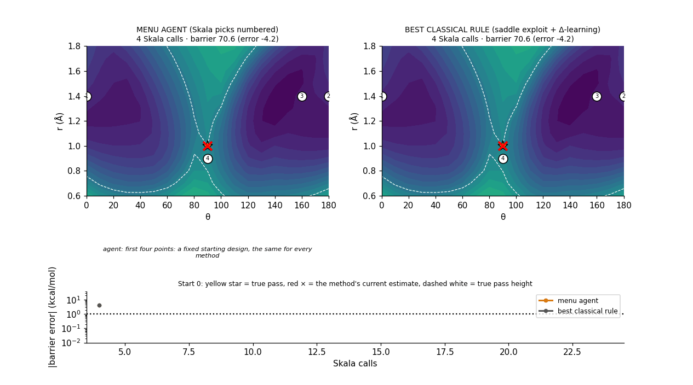

Animations
Three ways to watch the study run: the replay of one search, the electron density along the reaction, and the call-by-call explorer.
1 · Replay: agent against the best fixed rule

Start 0 on vinyl alcohol, edge-anchor design. Numbers in circles give the order of the expensive calls; the first four are the shared start. The lower strips show the error of the barrier estimate against the number of calls. The agent falls below 1 kcal/mol at call 9 and stops at call 12; the fixed rule is still 1.5 kcal/mol off after 24 calls.
2 · Skala electron density along the cheapest path
Nine frames from the vinyl alcohol enol (left) to acetaldehyde (right), in the plane of the molecule. Two “meters” read the density in the O–H bond and the C–H bond. They cross at the pass (q = −0.10 Å). Density is shown on a square-root scale.
Source: NB11 (L4 GPU run, 2026-11-12), 9 frames on a 60 × 75 point plane, from density_frames.npz.
3 · Call-by-call explorer
Pick any start, any two methods, and press play. Three presets: